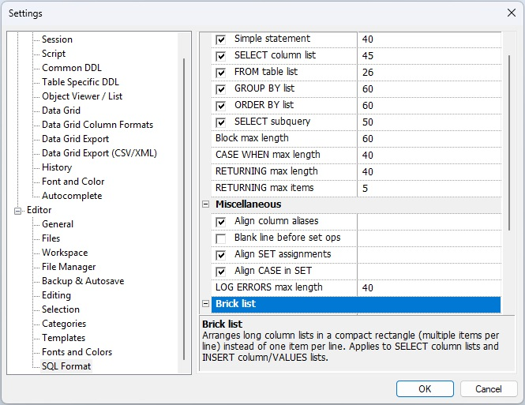

The Editor › SQL Format (tree) settings page controls how the SQL Formatter lays out query clauses. Settings are arranged in a two-level property tree. Every row can be edited entirely from the keyboard.

Each row has up to two editable parts:
The horizontal splitter bar between the two sides can be dragged with the mouse to resize the columns.
Category headers (Short-line heuristics, Miscellaneous) can be collapsed or expanded by clicking the [−] / [+] button or by pressing Left / Right when the header row is selected.
Keyboard navigation
| Key | Action |
|---|---|
| ↑ ↓ | Move the selection up or down one row. |
| Home End | Jump to the first or last visible row. |
| Left | If the focused row is an expanded category header, collapse it. Otherwise moves selection up (same as ↑). |
| Right | If the focused row is a collapsed category header, expand it. Otherwise moves selection down (same as ↓). |
| Space | Toggle the checkbox of the focused row on or off. Has no effect on rows that have no checkbox (Block max length, CASE WHEN max length, Log errors max length). |
| Enter | Open the numeric edit field of the focused row for in-place editing. Press Enter again (or Tab) to confirm and close the field. Has no effect on rows that have no numeric field. |
| Escape | If a numeric field is currently open for editing, discard the change and close the field. If no field is open, close the settings dialog (equivalent to clicking Cancel). |
| Tab | Move keyboard focus out of the property tree to the next control in the dialog (the OK or Cancel button). If a numeric field is open it is committed first, then focus leaves the tree. |
| Shift+Tab | Move keyboard focus to the previous control in the dialog. |
Settings reference
Short-line heuristics
These settings control when the formatter keeps a SQL clause on a single line instead of expanding it vertically. For each clause, the checkbox enables the feature and the number sets the maximum total line length that still qualifies as “short”.
| Setting | Default | Description |
|---|---|---|
| Simple statement | ✓ 60 |
Keep a complete, self-contained short statement
(e.g. a brief SELECT 1 FROM DUAL) on one line.
|
| SELECT column list | ✓ 40 | Keep a short SELECT column list on one line. |
| FROM table list | ✓ 40 | Keep a short FROM clause on one line. |
| GROUP BY list | ✓ 60 | Keep a short GROUP BY list on one line. |
| ORDER BY list | ✓ 60 | Keep a short ORDER BY list on one line. |
| SELECT subquery | ✓ 60 | Keep a short inline SELECT subquery on one line. |
| Block max length | 60 | Maximum line length for other parenthesised blocks. This row has no checkbox; the limit is always active. |
| CASE WHEN max length | 40 |
Keep a short WHEN clause on one line.
Set to 0 to always expand CASE
expressions vertically.
|
| RETURNING max length | 60 |
If the entire RETURNING … INTO …
clause fits within this length it is kept on one line.
Set to 0 to always expand.
|
| RETURNING max items | 5 |
Maximum number of items per line when a
RETURNING or INTO sub-list is
wrapped. Set to 0 for no item-count limit.
|
Miscellaneous
| Setting | Default | Description |
|---|---|---|
| Align column aliases | ✓ |
Vertically align the AS aliases of
SELECT list columns so they form a neat column.
|
| Blank line before set ops | ✓ |
Insert a blank line before
UNION, INTERSECT, and
MINUS operators to visually separate
the query blocks.
|
| Align SET assignments | ✓ |
Vertically align the right-hand sides of
SET clause assignments in
UPDATE statements.
|
| Align CASE in SET | ✓ |
When Align SET assignments is on, also
align CASE expressions that appear as the
right-hand side of a SET assignment so their
bodies line up with the other values.
|
| Log errors max length | 40 | Maximum line length used when formatting log error output. |
Brick list
Brick list mode packs SELECT column lists and
INSERT column / VALUES lists
into a compact rectangular block instead of placing each item
on its own line. See also
Brick list mode (SELECT) and
Brick list mode (INSERT).
| Setting | Default | Description |
|---|---|---|
| Enabled | ✓ | Master switch. When off, all brick-list settings are ignored and the formatter uses normal one-item-per-line layout for every column list. |
| Max line length | 80 | Maximum total line length for a brick row. When adding the next item would push the line past this limit, a new brick row is started. |
| Max items per line | 10 |
Upper bound on the number of items placed on a single brick row,
regardless of line length. Set to a large value (e.g.
99) to let the line-length limit alone decide.
|
| Min items to activate | 5 | Minimum number of items in the list before brick layout is used. Lists with fewer items fall back to normal one-item-per-line layout even when brick mode is enabled. |
| Linked INSERT col / VALUES | ✓ |
When on, the VALUES list wraps at the same item
positions as the INSERT column list so that each
value appears directly beneath its column name. Applies to both
standalone INSERT statements and the
INSERT action inside a MERGE.
See Linked brick — column list and VALUES list.
|
| Linked UNION / INTERSECT / MINUS | ✓ |
When on, every SELECT branch in a compound query
wraps its column list at the same positions as the first branch,
so corresponding columns align vertically across all branches.
See Linked brick layout across set-operation branches.
|